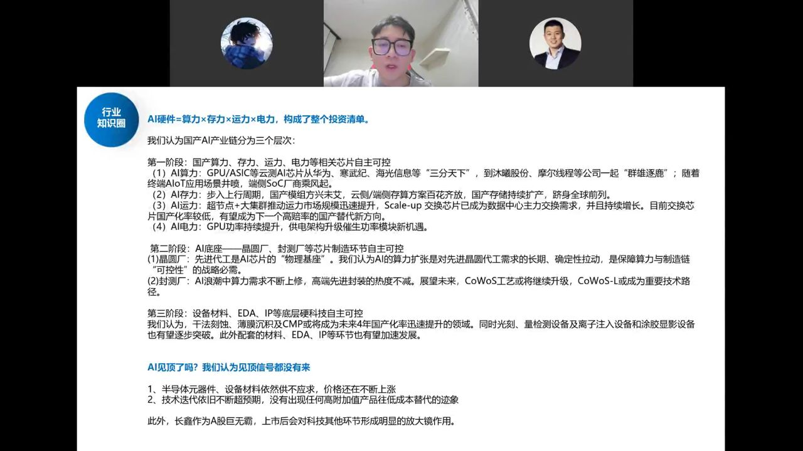
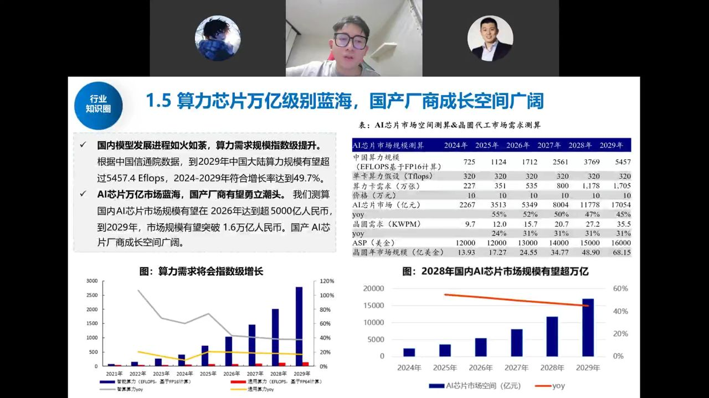
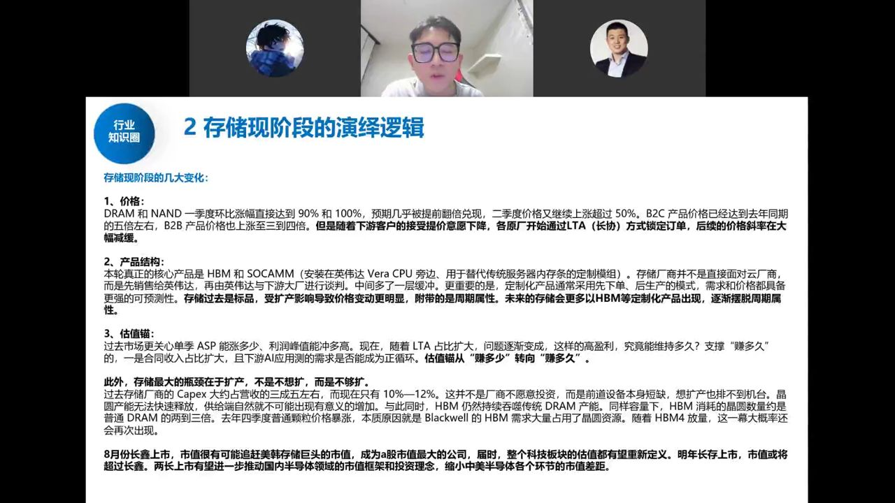
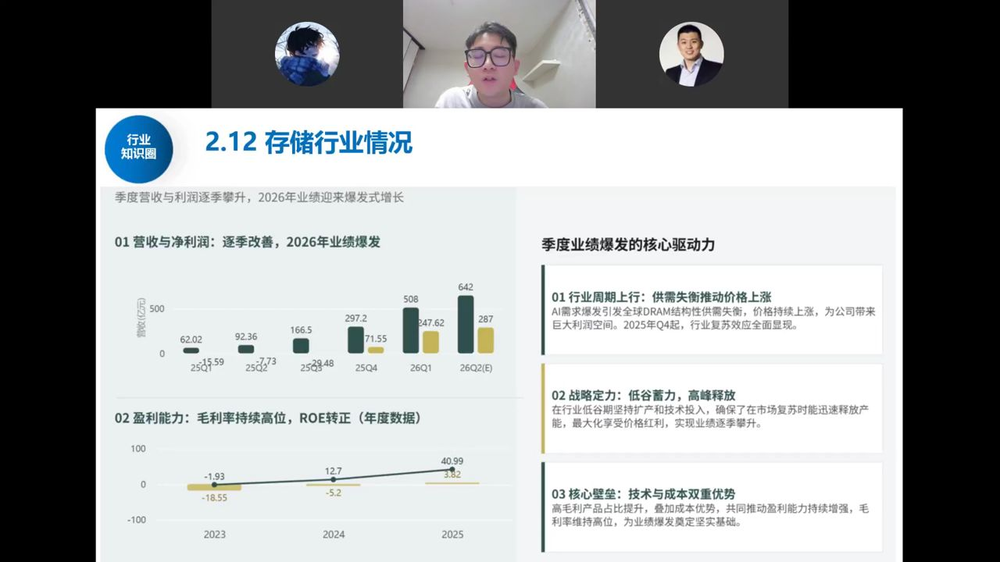
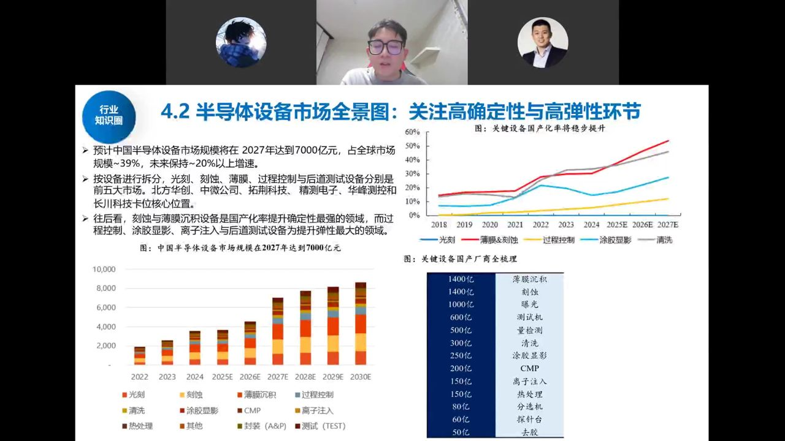

长鑫存储作为"A股巨无霸"8月上市，将如何重估整个中国半导体板块？ 本期系统梳理 AI 硬件投资框架（算力×存力×运力×电力）、存储从周期品向成长股的逻辑切换、 长鑫/长存的盈利与市值想象空间，以及设备材料的高确定性机会，并解释本轮暴涨暴跌的本质。
研究员把整个 AI 时代上游硬件概括为四条主线——算力、存力、运力、电力（电力更偏电芯环节），并把国产 AI 产业链分为三个层次：

周期节奏：2020–2023 年炒算力（英伟达涨超百倍）→ 2025 年起炒存力（美光、海力士、三星、闪迪/西部数据的存储涨价周期）→ 当下炒运力（博通、Marvell）与设备材料。判断 AI 是否见顶，就看下游大模型公司的 token 调用量与 ARR 是否持续上修——目前该"逻辑闭环"尚未打破。
需求端，海外 Anthropic 等大模型公司的 token 数据、ARR 周/月度仍在不断上升；国内互联网 CSP 大厂 CAPEX 也持续回暖上修。终端 ToC 应用尚未爆发、普通人还没用上多少 AI，但 ToB 端已经支撑大模型企业持续加大算力投入——产业正循环才刚刚开始。
基于国内算力规模（FP16 精度）测算单卡算力消耗、芯片数量与价格，再推导对应的晶圆需求：

政策端，通过安全可靠一级认证、国密国产化标签后，信创/政府市场将快速 100% 国产替代，并倒逼 CSP 厂商跟进；叠加海外持续制裁，国产 AI 芯片迎来爆发。以华为昇腾 950 为例，其采用多 die 合封、走"超节点"路线（牺牲单卡性能、增大卡间互联），8 卡乃至 Atlas 8000 千卡集群超节点已开始放量，互联类交换芯片（运力）是持续主线。
存储是本次行情的焦点。DRAM、NAND 一季度环比涨幅一度达 90%/100%，B2C 产品价格已达去年同期约 5 倍，B2B 合约价上涨 3–4 倍。但研究员判断：如此高的涨价斜率难再持续，存储却不会就此走弱，核心是三个变化：

随着下游客户接受高价意愿下降，原厂纷纷通过 LTA（长协） 锁定 5–10 年长单：不再赌短期暴涨，而是用"量"的持续放量 + 价格温和上涨换取更长的产业能见度。
本轮真正的核心产品是 HBM 和 SOCAMM（安装在英伟达 Vera CPU 旁的定制内存模组）。HBM 是高度定制化、与 GPU 协同开发的产品，不像 DRAM/NAND 那样可被友商扩产"卷价"。当前 HBM 已占存储出货量价值量的 45%–50%，未来有望到 6–7 成。存储正从"标品周期股"变为"定制化成长股"。
过去市场盯单季 ASP 能涨多少、利润峰值冲多高（周期股只给 5–10 倍 PE）；LTA 占比扩大后，问题变成"这份高盈利能维持多久"——对标英伟达 20 多倍、台积电 25 倍以上 PE。估值锚切换过程必然伴随筹码交换与股价剧烈波动。
存储的瓶颈不在"不想扩产"而在"不够扩"：前道设备机台短缺，HBM 消耗晶圆数量是普通 DRAM 的 2–3 倍（HBM4 还可能再翻倍），供需剪刀差长期存在。
长鑫主营 DRAM，已停产 DDR4、主攻 DDR5，HBM3 已送测客户、明年推 HBM3E（量产仍有约一年差距），产品处于全球第一梯队。招股书披露的季度盈利逐季爆发：

研究员判断：长鑫极可能成为 A 股市值第一、断档领先的几万亿公司。逻辑是——国内存储与海外差距不大，可直接对标美光（约 7 万亿市值）看齐；而国内晶圆厂与台积电差十几倍。长鑫上市等于告诉市场"高端硬科技我们能追上海外"，从而把晶圆厂、封测、设备环节的远期市值天花板一并打开。
关于长存：做 NAND（不比海外差）也做 DRAM，先进制程在成都（原紫光破产重组厂）也能做；半年后上市，上半年利润可能比长鑫还高、全年近 2000 亿，市值或超长鑫。
发行细节：发行价仅 8.6 元、股本极大（688 板块少见的 10 元以下），目的是让更多普通投资者能中签、分享收益，故中签率很高。
长鑫、长存猛扩产，海外台积电/美光也在猛扩（美光明年洁净室相关资本开支就达约 200 亿美金），设备是确定性最高的环节。中国半导体设备市场规模 2027 年有望达 7000 亿元，占全球约 39%，未来保持 20%+ 增速。

叠加华为"逻辑折叠"（韬定律）：单芯片做不到先进制程，就用多 die 3D 堆叠（芯粒/超节点）凑密度，单位晶体管密度仍可达 3nm/1.4nm 水平，但晶圆消耗数量翻倍——这是打开晶圆厂远期空间、拉动先进封装与后道设备的新变量。
存储板块近期暴涨暴跌、海外韩股率先崩跌，研究员认为主因是筹码与杠杆，而非产业逻辑破坏：
关键判断：只要大模型 ARR/token 仍在正循环，产业趋势就未破。当前光模块明年约 10 倍 PE、长鑫按利润算估值很快能消化，并非"越跌越贵"的泡沫式熊市起点。若美股只是震荡调整（而非腰斩），国内可切换到"国产化"新叙事；只有美股产业需求证伪（腰斩级下跌），短期逻辑才会真正受冲击。
主持人补充视角：这是美元潮汐收割逻辑（日韩在被收割名单前三），2026 下半年—2027 年前后 A 股需"换故事"讲国产化；对个人而言，财富转型的核心是"跟上核心资产"，成长股 3%–50% 波动是常态，风险提示的本意是"别折腾、别犯大错"，而非逃顶抄底。